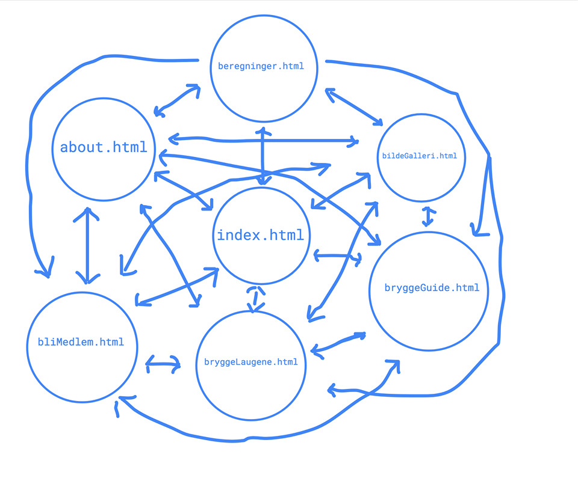
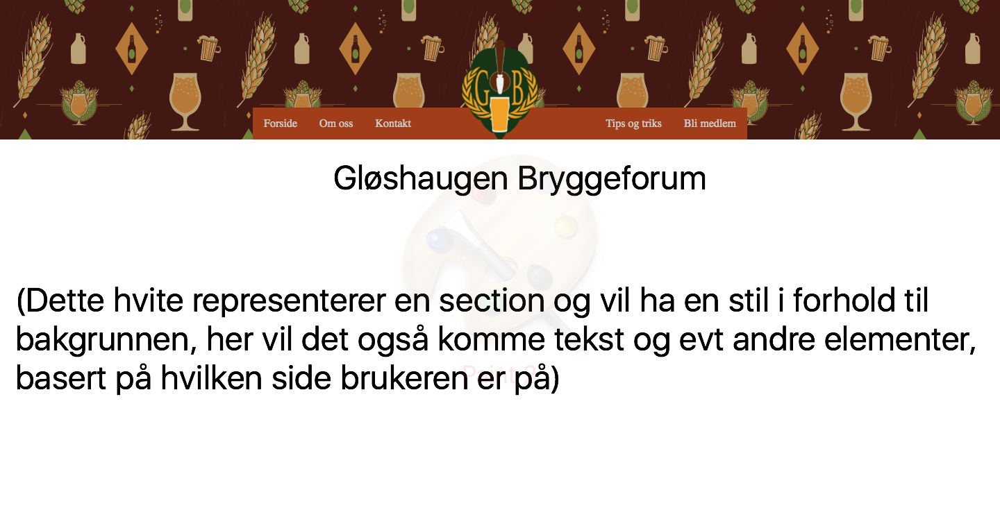

Project design
Filip Østervold Tangen, Marcus Henriksbø, Sondre Sørdal, Peder Lexau og
Sander Lindberg (Fredag 06.10)
Vår kunde
Gløshaugen Bryggeforum
Gløshaugen bryggeforum er en paraplyorganisasjon for alle bryggelaugene på Gløshaugen campus, ledet av Trod Standnes.

Bryggeforumet sin logo
Mål, mening og publikum
Målet med nettsiden er å vise verden at Gløshaugen Bryggeforum eksisterer og er en seriøs organisasjon. GB ønsker å bli oppdaget om eventuelle sponsorer søker etter dem. De ønsker også å være en infoside for gamle og nye medlemmer, hvor disse kan finne informasjon om kurs, møter, bryggeoppskrifter og mer.
Publikummet til nettsiden vil hovedsaklig være medlemmene til Gløshaugen Bryggeforum, men også eventuelle sponsorer og nye medlemmer. I tilegg vil publikummet være alle som er interesserte i å lære mer om GB og vurderer et medlemskap.
Nettsidekoblinger
Alle sidene kan nåes fra hverandre, via menyen. Menyen har linker til alle sidene, og skal vises på alle sidene.
Generell side layout
Det universelle designet til ølbryggeforumet skal gjennspeile klubbens foretak og hensikter. Dette gjør vi med en rekke forskjellig virkemidler, blant annet et visuelt appelerende design som både holder brukeren på siden, samtidig som den vil få dem til å utforske andre deler av nettsiden. Ved å bruke en begrenset fargepalett bestående av farger som gir konotasjoner til ølbrygging og en minimalistisk utforming, vil brukeren lett kunne identifisere seg med og kunne finne og utforske ølbryggerforumet. På grunn av at mange av brukerene vil være potensielt nye medlemmer og sponsorer, vil et profesjonelt innbydende og oversiktlig design være viktig. Derfor er det viktig at kontakt, om oss og "bli medlem" siden er lett tilgjengelig fra forsiden. Vi har derfor lagt alle disse sidene på en hovedmeny på toppen av hver side. Ølbryggerforumets logo er også en del av denne menyen, slik at forumet skal bli bedre husket. De fleste brukere av denne siden vil være av den yngre målgruppen, og det er derfor viktig at nettsiden er moderne og "trendy". Dette er en av grunnene for at vi har valgt et flatt design, som utnytter skjermplassen.
Mockup av layout
Innhold
Forside
Forsiden er siden brukeren kommer inn på ved å gå til Ølbryggerforumets nettside. Målet med nettsiden er å både virke visuelt appellerende for å holde brukeren på siden samtidig som den skal være oversiktlig for at brukeren skal kunne finne informasjonen de leter etter eller som vil være nyttig å vite. Vi tenker at denne forsiden kan dra nytte av kort info, medlemstall og kortfattet praktisk informasjon.
HTML filer
| Side | Ansvarlig |
|---|---|
| index.html | Marcus |
| om.html | Sondre |
| bryggelaug.html | Sondre |
| bryggeGuide.html | Peder |
| bliMedlem.html | Peder |
| bildeGalleri.html | Filip |
| beregninger.html | Sander |
JavaScript
| Navn på script | Ansvarlig |
|---|---|
| slideshow.js | Filip |
| expandLaug.js | Sondre |
| calculator.js | Sander |
| olMaaler.js | Marcus |